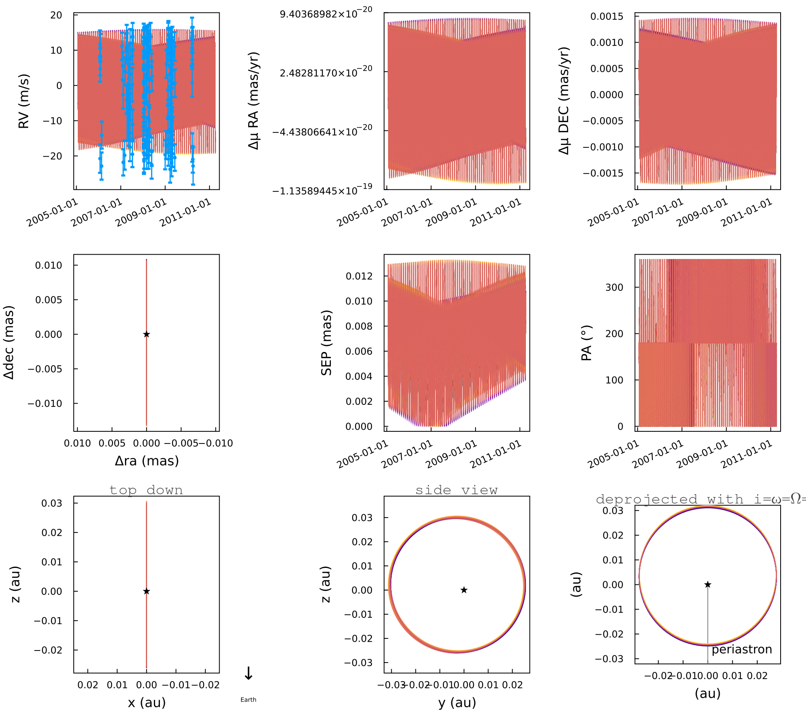

Fit Radial Velocity
You can use Octofitter as a basic tool for fitting radial velocity data, by itself, or in combination with other kinds of data. Multiple instruments (up to five) are supported.
Radial velocity modelling is supported in Octofitter via the extension package OctofitterRadialVelocity. To install it, run pkg> add OctofitterRadialVelocity
Load the packages we'll need:
using Octofitter, OctofitterRadialVelocity, Distributions, PlanetOrbits, PlotsWe can specify a table of radial velocity data manually by creating a RadialVelocityLikelihood. An example of this is in the other RV tutorial.
We can also directly load in data from the HARPS RVBank dataset:
rvs = OctofitterRadialVelocity.HARPS_rvs("GJ436")RadialVelocityLikelihood Table with 4 columns and 169 rows:
epoch inst_idx rv σ_rv
┌──────────────────────────────────
1 │ 53760.3 1 14.41 1.193
2 │ 53761.3 1 -18.072 1.359
3 │ 53762.3 1 7.407 0.96
4 │ 53763.3 1 9.38 1.146
5 │ 53765.3 1 13.463 1.15
6 │ 53785.3 1 -20.19 1.175
7 │ 53788.3 1 -11.405 1.136
8 │ 54122.3 1 13.836 1.152
9 │ 54135.3 1 8.246 1.163
10 │ 54140.3 1 0.079 1.259
11 │ 54142.3 1 -19.134 1.034
12 │ 54166.3 1 -17.128 1.388
13 │ 54172.2 1 6.696 1.24
14 │ 54194.2 1 13.143 1.488
15 │ 54197.2 1 -1.356 1.267
16 │ 54199.2 1 16.157 1.029
17 │ 54202.2 1 13.661 1.179
⋮ │ ⋮ ⋮ ⋮ ⋮Now, create a planet. Since we're only fitting radial velocity data, we fix some of these parameters
@planet b Visual{KepOrbit} begin
τ ~ UniformCircular(1.0)
mass ~ truncated(Normal(21.3*0.00314558, 8*0.00314558),lower=0)
a ~ truncated(Normal(0.028, 0.02), lower=0)
i = pi/2
e ~ Uniform(0, 0.5)
ω ~ UniformCircular()
Ω = 0
end
# Nor create the system
@system HD82134 begin
M ~ truncated(Normal(0.425,0.009),lower=0)
plx ~ 0.425
# RV zero point of the system for instrument 1
rv0_1 ~ Normal(0,10)
# Jitter term for instrument 1
jitter_1 ~ truncated(Normal(0,10),lower=0)
end rvs bSystem model HD82134
Derived:
plx,
Priors:
M Truncated(Distributions.Normal{Float64}(μ=0.425, σ=0.009); lower=0.0)
rv0_1 Distributions.Normal{Float64}(μ=0.0, σ=10.0)
jitter_1 Truncated(Distributions.Normal{Float64}(μ=0.0, σ=10.0); lower=0.0)
Planet b
Derived:
τ, i, ω, Ω,
Priors:
τy Distributions.Normal{Float64}(μ=0.0, σ=1.0)
τx Distributions.Normal{Float64}(μ=0.0, σ=1.0)
mass Truncated(Distributions.Normal{Float64}(μ=0.067000854, σ=0.02516464); lower=0.0)
a Truncated(Distributions.Normal{Float64}(μ=0.028, σ=0.02); lower=0.0)
e Distributions.Uniform{Float64}(a=0.0, b=0.5)
ωy Distributions.Normal{Float64}(μ=0.0, σ=1.0)
ωx Distributions.Normal{Float64}(μ=0.0, σ=1.0)
Octofitter.UnitLengthPrior{:τy, :τx}: √(τy^2+τx^2) ~ LogNormal(log(1), 0.02)
Octofitter.UnitLengthPrior{:ωy, :ωx}: √(ωy^2+ωx^2) ~ LogNormal(log(1), 0.02)
RadialVelocityLikelihood Table with 4 columns and 169 rows:
epoch inst_idx rv σ_rv
┌──────────────────────────────────
1 │ 53760.3 1 14.41 1.193
2 │ 53761.3 1 -18.072 1.359
3 │ 53762.3 1 7.407 0.96
4 │ 53763.3 1 9.38 1.146
5 │ 53765.3 1 13.463 1.15
6 │ 53785.3 1 -20.19 1.175
7 │ 53788.3 1 -11.405 1.136
8 │ 54122.3 1 13.836 1.152
9 │ 54135.3 1 8.246 1.163
10 │ 54140.3 1 0.079 1.259
11 │ 54142.3 1 -19.134 1.034
12 │ 54166.3 1 -17.128 1.388
13 │ 54172.2 1 6.696 1.24
14 │ 54194.2 1 13.143 1.488
15 │ 54197.2 1 -1.356 1.267
16 │ 54199.2 1 16.157 1.029
17 │ 54202.2 1 13.661 1.179
⋮ │ ⋮ ⋮ ⋮ ⋮
Build model:
model = Octofitter.LogDensityModel(HD82134; autodiff=:ForwardDiff, verbosity=4) # defaults are ForwardDiff, and verbosity=0LogDensityModel for System HD82134 of dimension 10 with fields .ℓπcallback and .∇ℓπcallback
Sample from chains:
results = Octofitter.advancedhmc(
model, 0.8;
adaptation = 1000,
iterations = 1000,
verbosity = 4,
tree_depth = 14
)Chains MCMC chain (1000×19×1 Array{Float64, 3}):
Iterations = 1:1:1000
Number of chains = 1
Samples per chain = 1000
Wall duration = 6689.17 seconds
Compute duration = 6689.17 seconds
parameters = M, rv0_1, jitter_1, plx, b_τy, b_τx, b_mass, b_a, b_e, b_ωy, b_ωx, b_τ, b_i, b_ω, b_Ω
internals = logpost, loglike, tree_depth, numerical_error
Summary Statistics
parameters mean std mcse ess_bulk ess_tail rhat ⋯
Symbol Float64 Float64 Float64 Float64 Float64 Float64 ⋯
M 0.4188 0.0008 0.0004 4.7541 20.3667 1.2405 ⋯
rv0_1 -10.9770 0.9813 0.4085 5.5870 17.3394 1.1385 ⋯
jitter_1 2.7288 0.2319 0.0861 7.6536 12.4452 1.1928 ⋯
plx 0.4250 0.0000 0.0000 NaN NaN NaN ⋯
b_τy -0.8833 0.0700 0.0338 5.9916 12.5877 1.2416 ⋯
b_τx -0.4565 0.1038 0.0476 6.5808 12.3987 1.4780 ⋯
b_mass 0.0653 0.0005 0.0001 48.7990 110.3745 1.0157 ⋯
b_a 0.0280 0.0000 0.0000 4.8549 20.3667 1.2316 ⋯
b_e 0.1304 0.0060 0.0025 5.5566 24.9307 1.2850 ⋯
b_ωy 0.7806 0.0405 0.0135 9.3392 23.2588 1.0579 ⋯
b_ωx -0.6182 0.0576 0.0202 8.6096 20.6099 1.0212 ⋯
b_τ -0.4240 0.0198 0.0093 6.4941 12.4194 1.4625 ⋯
b_i 1.5708 0.0000 0.0000 NaN NaN NaN ⋯
b_ω -0.6695 0.0681 0.0243 8.3166 20.4284 1.0253 ⋯
b_Ω 0.0000 0.0000 NaN NaN NaN NaN ⋯
1 column omitted
Quantiles
parameters 2.5% 25.0% 50.0% 75.0% 97.5%
Symbol Float64 Float64 Float64 Float64 Float64
M 0.4172 0.4183 0.4188 0.4192 0.4205
rv0_1 -12.4882 -11.7469 -11.1425 -10.1745 -9.0844
jitter_1 2.3480 2.5671 2.6835 2.9264 3.1679
plx 0.4250 0.4250 0.4250 0.4250 0.4250
b_τy -0.9633 -0.9264 -0.9043 -0.8687 -0.6805
b_τx -0.7303 -0.4997 -0.4275 -0.3815 -0.3178
b_mass 0.0643 0.0649 0.0653 0.0656 0.0662
b_a 0.0280 0.0280 0.0280 0.0280 0.0280
b_e 0.1172 0.1275 0.1308 0.1343 0.1402
b_ωy 0.7060 0.7513 0.7784 0.8054 0.8625
b_ωx -0.7122 -0.6575 -0.6212 -0.5881 -0.4780
b_τ -0.4484 -0.4373 -0.4299 -0.4177 -0.3705
b_i 1.5708 1.5708 1.5708 1.5708 1.5708
b_ω -0.7840 -0.7156 -0.6744 -0.6306 -0.5024
b_Ω 0.0000 0.0000 0.0000 0.0000 0.0000
using Plots
octoplot(model, results)("HD82134-plot-grid.png", "HD82134-plot-grid-colorbar.png")